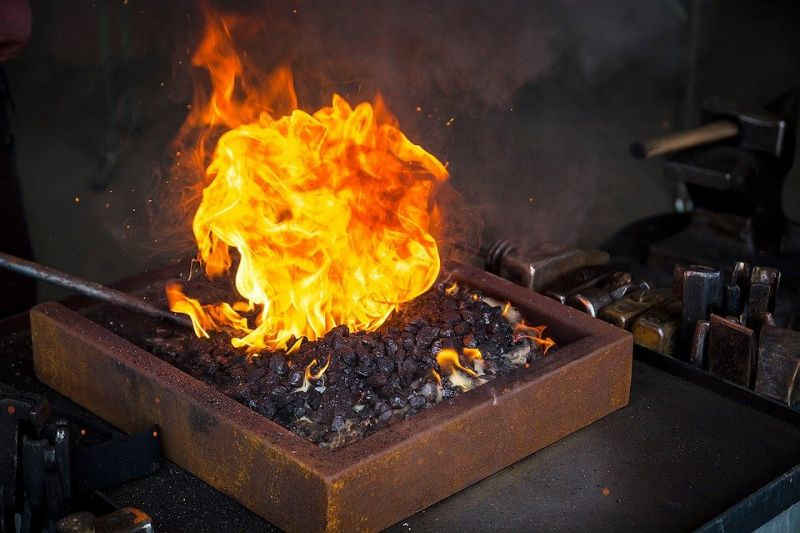
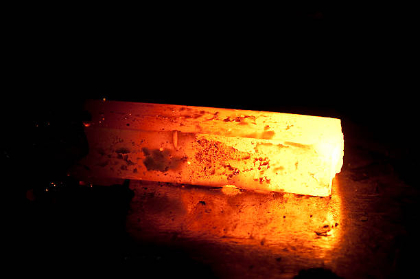
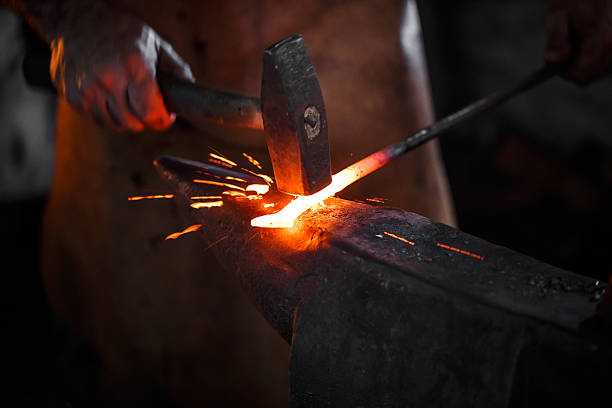

NorseForged
NorseForged is a beared forging creator who uses traditional metalworking to make Norse-inspired forged steel. He creates custom forged blades and tools, shares his build process and workshops like knife-making classes, and invites enthusiasts to explore craftsmanship rooted in fire, steel, and heritage.
Black Bear Forge
Black Bear Forge is a traditional blacksmith and metalworking brand run by artisan John Switzer, known for creating custom forged items and sharing his craft through detailed instructional content online. The name is also associated with a popular YouTube channel that teaches blacksmithing techniques, project builds, and tooling tips for hobbyists and aspiring smiths.
Saulforged
Saulforged showcases the work of Reece Foster, a traditional blacksmith crafting hand-forged metal pieces from a 270-year-old forge in Mountshannon, Ireland. He creates bespoke forged items and shares his passion for heritage metalworking through his shop and social content, blending old-world technique with modern artistic expression.
Soul of Creation
Soul of Creation showcases the work of Ryan Searls, a skilled bladesmith creating custom forged knives and metal art. He shares his craft through short-form videos, behind-the-scenes forging process clips, and finished pieces, blending traditional technique with creative, modern storytelling.
Bjorn the Blacksmith
Bjorn the Blacksmith specializes in forging Viking Age and Anglo-Saxon inspired weapons, tools, and accessories based on historical techniques and archaeological finds. He showcases his craftsmanship through short-form social clips and project highlights, celebrating traditional metalworking rooted in Norse heritage.
